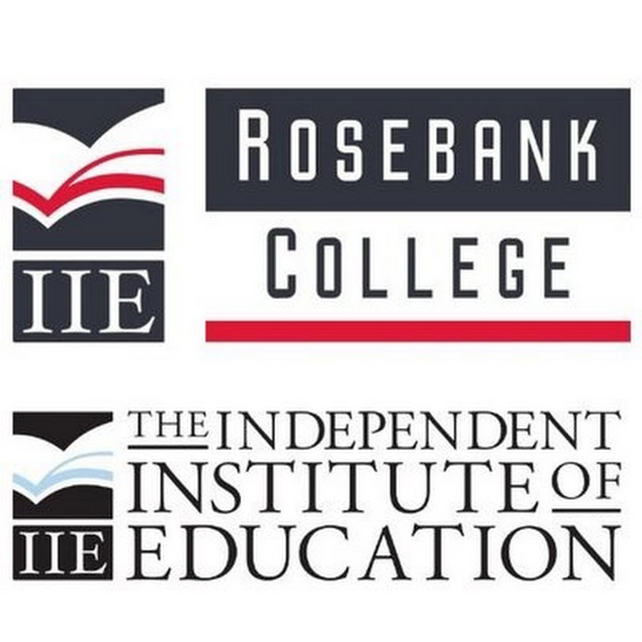

Rosebank College is a higher education institution in South Africa. It offers diplomas, degrees, and higher certificates in fields like IT, Business, Education, and more.
| Qualification | Field | Duration | Subjects Required |
|---|---|---|---|
| Higher Certificate in IT | Information Technology | 1 Year | Mathematics or Mathematical Literacy, English |
| Diploma in Business Management | Business | 3 Years | English, Business Studies or Economics |
| Bachelor of Education | Education | 4 Years | English, One Teaching Subject (e.g. Mathematics, Life Sciences) |
| Diploma in Graphic Design | Design & Media | 3 Years | English, Visual Arts or Design |
| Higher Certificate in Marketing | Marketing | 1 Year | English, Business Studies |